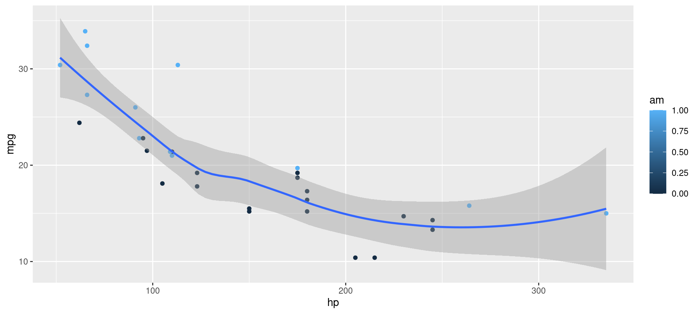
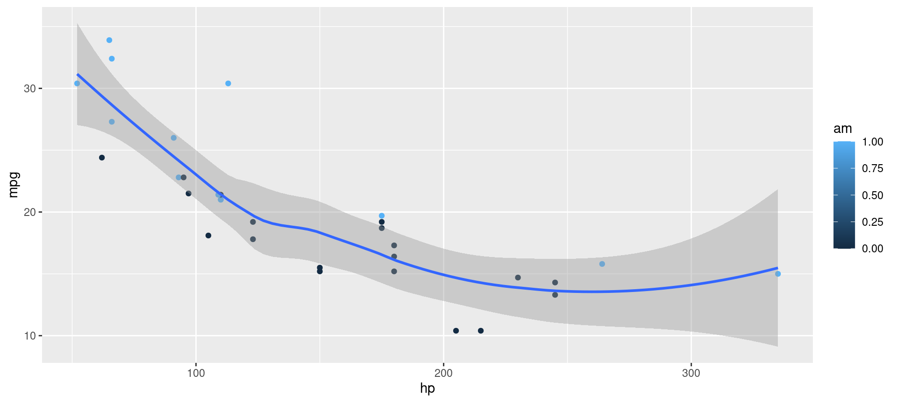
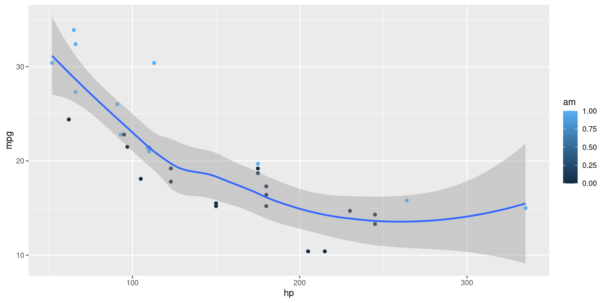

library(ggplot2)
ggplot(mtcars, aes(hp, mpg, color = am)) +
geom_point() + geom_smooth(formula = y ~ x, method = "loess")
Metropolis theme
This presentation will show you examples of what you can do with Quarto and Reveal.js, including:
…and much more
# Define a server for the Shiny app
function(input, output) {
# Fill in the spot we created for a plot
output$phonePlot <- renderPlot({
# Render a barplot
})
}# Define a server for the Shiny app
function(input, output) {
# Fill in the spot we created for a plot
output$phonePlot <- renderPlot({
# Render a barplot
barplot(WorldPhones[,input$region]*1000,
main=input$region,
ylab="Number of Telephones",
xlab="Year")
})
}library(ggplot2)
ggplot(mtcars, aes(hp, mpg, color = am)) +
geom_point() + geom_smooth(formula = y ~ x, method = "loess")
MathJax rendering of equations to HTML
\begin{gather*}
a_1=b_1+c_1\\
a_2=b_2+c_2-d_2+e_2
\end{gather*}
\begin{align}
a_{11}& =b_{11}&
a_{12}& =b_{12}\\
a_{21}& =b_{21}&
a_{22}& =b_{22}+c_{22}
\end{align}Arrange content into columns of varying widths:
The data was extracted from the 1974 Motor Trend US magazine, and comprises fuel consumption and 10 aspects of automobile design and performance for 32 automobiles.
| mpg | cyl | disp | hp | wt | |
|---|---|---|---|---|---|
| Mazda RX4 | 21.0 | 6 | 160 | 110 | 2.620 |
| Mazda RX4 Wag | 21.0 | 6 | 160 | 110 | 2.875 |
| Datsun 710 | 22.8 | 4 | 108 | 93 | 2.320 |
| Hornet 4 Drive | 21.4 | 6 | 258 | 110 | 3.215 |
| Hornet Sportabout | 18.7 | 8 | 360 | 175 | 3.440 |
| Valiant | 18.1 | 6 | 225 | 105 | 3.460 |
Lists can optionally be displayed incrementally:
. . .
Insert pauses to make other types of content display incrementally.
Incremental text display and animation with fragments:
Fade in
Slide up while fading in
Slide left while fading in
Fade in then semi out
. . .
Strike
Highlight red
Set the background attribute on a slide to change the background color (all CSS color formats are supported).
Different background transitions are available via the background-transition option.
You can also use the following as a slide background:
An image: background-image
A video: background-video
An iframe: background-iframe
Position images or other elements at precise locations


Automatically animate matching elements across slides with Auto-Animate.
Automatically animate matching elements across slides with Auto-Animate.
The next few slides will transition using the slide transition
| Transition | Description |
|---|---|
none |
No transition (default, switch instantly) |
fade |
Cross fade |
slide |
Slide horizontally |
convex |
Slide at a convex angle |
concave |
Slide at a concave angle |
zoom |
Scale the incoming slide so it grows in from the center of the screen. |

| mpg | cyl | disp | hp | drat | wt | qsec | vs | am | gear | carb | |
|---|---|---|---|---|---|---|---|---|---|---|---|
| Mazda RX4 | 21.0 | 6 | 160.0 | 110 | 3.90 | 2.620 | 16.46 | 0 | 1 | 4 | 4 |
| Mazda RX4 Wag | 21.0 | 6 | 160.0 | 110 | 3.90 | 2.875 | 17.02 | 0 | 1 | 4 | 4 |
| Datsun 710 | 22.8 | 4 | 108.0 | 93 | 3.85 | 2.320 | 18.61 | 1 | 1 | 4 | 1 |
| Hornet 4 Drive | 21.4 | 6 | 258.0 | 110 | 3.08 | 3.215 | 19.44 | 1 | 0 | 3 | 1 |
| Hornet Sportabout | 18.7 | 8 | 360.0 | 175 | 3.15 | 3.440 | 17.02 | 0 | 0 | 3 | 2 |
| Valiant | 18.1 | 6 | 225.0 | 105 | 2.76 | 3.460 | 20.22 | 1 | 0 | 3 | 1 |
| Duster 360 | 14.3 | 8 | 360.0 | 245 | 3.21 | 3.570 | 15.84 | 0 | 0 | 3 | 4 |
| Merc 240D | 24.4 | 4 | 146.7 | 62 | 3.69 | 3.190 | 20.00 | 1 | 0 | 4 | 2 |
| Merc 230 | 22.8 | 4 | 140.8 | 95 | 3.92 | 3.150 | 22.90 | 1 | 0 | 4 | 2 |
| Merc 280 | 19.2 | 6 | 167.6 | 123 | 3.92 | 3.440 | 18.30 | 1 | 0 | 4 | 4 |
| Merc 280C | 17.8 | 6 | 167.6 | 123 | 3.92 | 3.440 | 18.90 | 1 | 0 | 4 | 4 |
| Merc 450SE | 16.4 | 8 | 275.8 | 180 | 3.07 | 4.070 | 17.40 | 0 | 0 | 3 | 3 |
| Merc 450SL | 17.3 | 8 | 275.8 | 180 | 3.07 | 3.730 | 17.60 | 0 | 0 | 3 | 3 |
| Merc 450SLC | 15.2 | 8 | 275.8 | 180 | 3.07 | 3.780 | 18.00 | 0 | 0 | 3 | 3 |
| Cadillac Fleetwood | 10.4 | 8 | 472.0 | 205 | 2.93 | 5.250 | 17.98 | 0 | 0 | 3 | 4 |
| Lincoln Continental | 10.4 | 8 | 460.0 | 215 | 3.00 | 5.424 | 17.82 | 0 | 0 | 3 | 4 |
| Chrysler Imperial | 14.7 | 8 | 440.0 | 230 | 3.23 | 5.345 | 17.42 | 0 | 0 | 3 | 4 |
| Fiat 128 | 32.4 | 4 | 78.7 | 66 | 4.08 | 2.200 | 19.47 | 1 | 1 | 4 | 1 |
| Honda Civic | 30.4 | 4 | 75.7 | 52 | 4.93 | 1.615 | 18.52 | 1 | 1 | 4 | 2 |
| Toyota Corolla | 33.9 | 4 | 71.1 | 65 | 4.22 | 1.835 | 19.90 | 1 | 1 | 4 | 1 |
| Toyota Corona | 21.5 | 4 | 120.1 | 97 | 3.70 | 2.465 | 20.01 | 1 | 0 | 3 | 1 |
| Dodge Challenger | 15.5 | 8 | 318.0 | 150 | 2.76 | 3.520 | 16.87 | 0 | 0 | 3 | 2 |
| AMC Javelin | 15.2 | 8 | 304.0 | 150 | 3.15 | 3.435 | 17.30 | 0 | 0 | 3 | 2 |
| Camaro Z28 | 13.3 | 8 | 350.0 | 245 | 3.73 | 3.840 | 15.41 | 0 | 0 | 3 | 4 |
| Pontiac Firebird | 19.2 | 8 | 400.0 | 175 | 3.08 | 3.845 | 17.05 | 0 | 0 | 3 | 2 |
| Fiat X1-9 | 27.3 | 4 | 79.0 | 66 | 4.08 | 1.935 | 18.90 | 1 | 1 | 4 | 1 |
| Porsche 914-2 | 26.0 | 4 | 120.3 | 91 | 4.43 | 2.140 | 16.70 | 0 | 1 | 5 | 2 |
| Lotus Europa | 30.4 | 4 | 95.1 | 113 | 3.77 | 1.513 | 16.90 | 1 | 1 | 5 | 2 |
| Ford Pantera L | 15.8 | 8 | 351.0 | 264 | 4.22 | 3.170 | 14.50 | 0 | 1 | 5 | 4 |
| Ferrari Dino | 19.7 | 6 | 145.0 | 175 | 3.62 | 2.770 | 15.50 | 0 | 1 | 5 | 6 |
| Maserati Bora | 15.0 | 8 | 301.0 | 335 | 3.54 | 3.570 | 14.60 | 0 | 1 | 5 | 8 |
| Volvo 142E | 21.4 | 4 | 121.0 | 109 | 4.11 | 2.780 | 18.60 | 1 | 1 | 4 | 2 |
Include Jupyter widgets and htmlwidgets in your presentations
Navigate to hyperlinks without disrupting the flow of your presentation.
Use the preview-links option to open links in an iframe on top of your slides. Try clicking the link below for a demonstration:
10 Built-in Themes (or create your own)


Quickly jump to other parts of your presentation

Toggle the slide menu with the menu button (bottom left of slide) to go to other slides and access presentation tools.
You can also press m to toggle the menu open and closed.
Free form drawing and slide annotations

Use the chalkboard button at the bottom left of the slide to toggle the chalkboard.

Use the notes canvas button at the bottom left of the slide to toggle drawing on top of the current slide.
You can also press b to toggle the chalkboard or c to toggle the notes canvas.
Press o to toggle overview mode:

Hold down the Alt key (or Ctrl in Linux) and click on any element to zoom towards it—try it now on this slide.
Press s (or use the presentation menu) to open speaker view

Live side-by-side preview for any notebook or text editor including Jupyter and VS Code


RStudio includes an integrated presentation preview pane